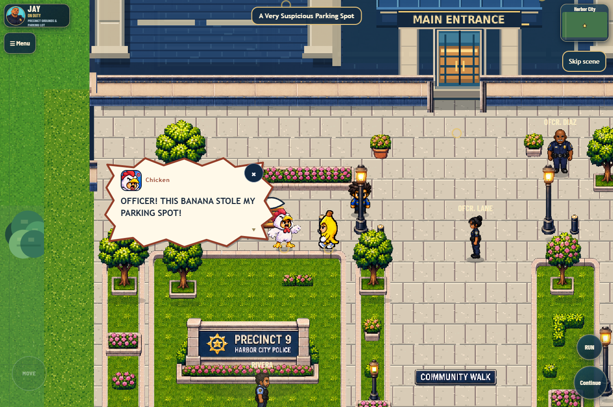
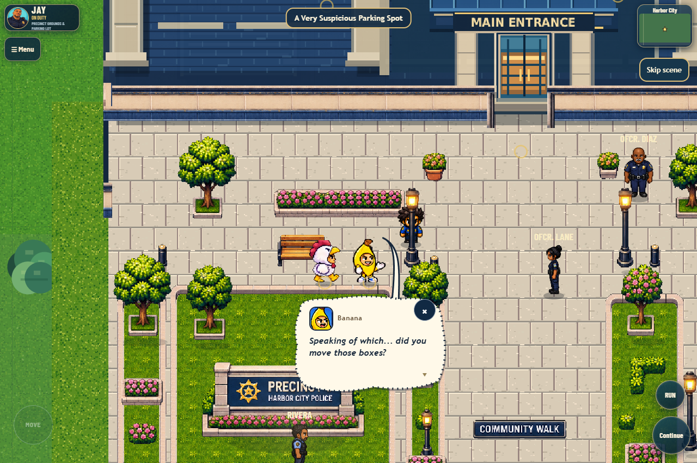
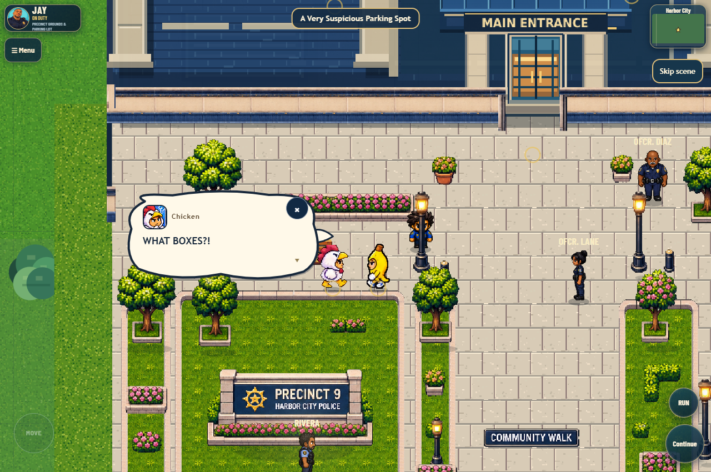
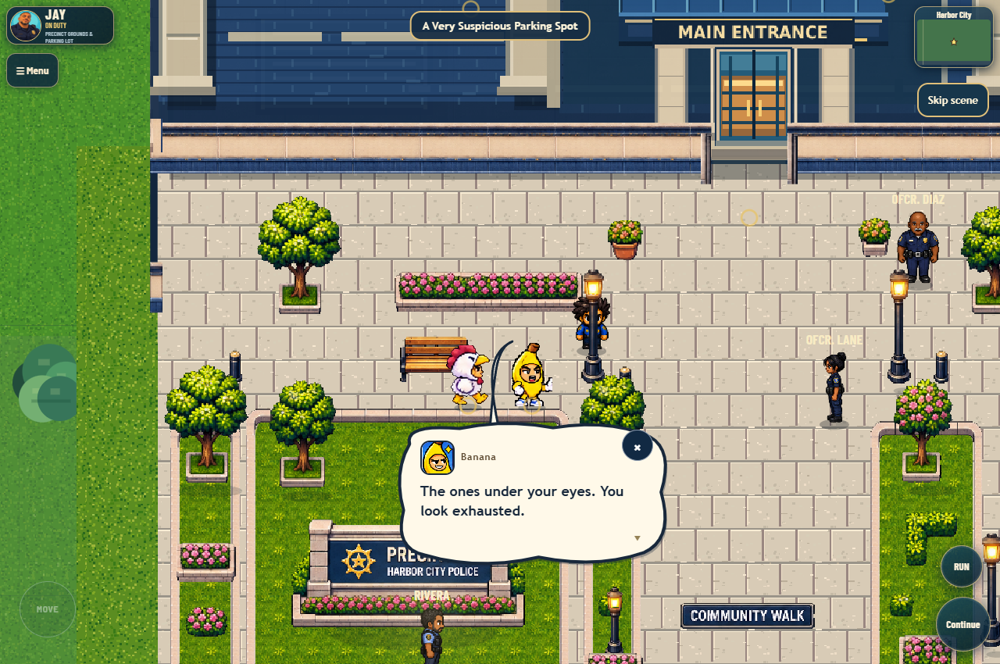
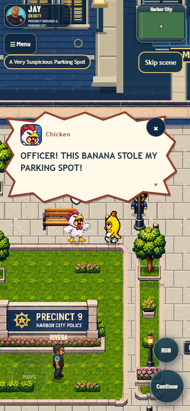
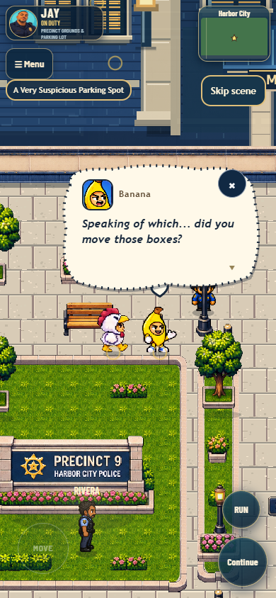

A Very Suspicious Parking Spot
Chicken and Banana's first cinematic encounter, running in the seamless local game.
On foot, walk from the precinct entrance southwest into the pair's plaza frontage. The scene runs once per profile. Use Skip scene or Escape at any point. The local toolbar's Replay encounter (dev) preserves saved completion.

The exact opening line with existing argument art and an anchored comic balloon.
A smaller whisper balloon and a subtle step toward Chicken.
Confused portrait and the existing directional pose.
The ordinary comic presentation returns as Banana changes his tone.
Mobile portrait: both NPCs framed and readable text.
Native mobile taps advance the full script; Skip remains available.Player coordinates remain unchanged. Camera and controls restore, the actors continue roaming, and the completion flag persists independently per profile. No new artwork or external music. Nothing pushed or deployed.